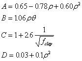
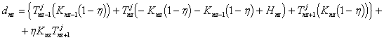

General description
Simulates soil temperature given minimal input information using a numerical scheme.
Usage
Soiltemp requires
- water content information from a water module,
- air temperature from the input module,
- and where available will use soil water evaporation and incident net radiation as part of the upper boundary condition.
Theory
The node/element scheme for the numerical simulation is shown in Figure 1 where the circles denote the nodes and the zigzag's show the elements.
All heat storage is assumed to occur at the nodes and all resistance to heat transfer is assumed to take place within the elements.

Figure 1. A diagrammatic representation of the node structure of the numerical simulation.
where in Figure 1. ,
T is temperature,
Z is depth,
K is thermal conductance,
S is heat storage,
nz is the number of nodes in the simulation,
BL stands for boundary layer,
Ta is the air temperature, and
Tave is the annual average soil temperature.
We begin by defining the heat balance at a node i, where i ≠ 1 or nz.
The decrease in storage of heat at the node over a particular timestep is equal to the amount of heat leaving the node minus the amount of heat coming in all divided by the timestep so that,
, [1]
where in Equation 1. ,
Delta stands for a change and
t is time (s).
Also In Equation 1. ,
Storage of heat is calculated from the change in temperature with time and the volumetric specific heat of the soil so that,
, [2]
in Equation 2. ,
i stands for a particular node,
j refers to the current timestep and j+1 to the next timestep,
T is temperature ( oC),
C is the volumetric specific heat of the soil (J K-1 m-3 ),
A is the cross-sectional area and is normally taken as 1 m2 , and
z is depth (m). Because all heat storage is assumed to occur at the nodes, the appropriate depth interval is half the distance to the node on either side of i .
In Equation 2. ,
C can be calculated from the specific heats of the soil constituents so that,
 , [3]
, [3]
in Equation 3. ,
Rho is the soil bulk density (Mg m-3 ),
Rhos is the particle density and is usually taken as 2.65 Mg m-3 ,
Theta is the volumetric water content (m3 m-3 ),
the subscripts on C indicate the substance.
Cair is usually assumed to be negligible while appropriate values of C for clay minerals and water are 2.39 and 4.18 MJ m-3 K-1 .
Where more precise values are required, the equation can be expanded to account for organic matter and other minerals.
See Campbell (1985) or Jury et al. (1991) for details on how to calculate C in more detail.
Also back in Equation 1.,
Heat transfer is calculated from the standard Fickian equation where the rate of transfer is proportional to the temperature difference divided by the distance,
, [4]
in Equation 4. ,
Lambda is the thermal conductivity (J s-1 m-1 K-1 ) and
the overbar on T indicates that an appropriate average in time of temperature should be used.
in Equation 4.,
Lamda can either be calculated from measurements of temperature changes in the soil (see Jury et al. , 1991 for an example) or can be approximated from regression equations.
Below is given the scheme from Campbell (1985).
First four parameters dependent on density, water content, and the amount of clay are calculated.
These are,
, [5]
in Equation 5. ,
fclay is the fraction of clay in the soil.
The parameters in Equation 5 are combined into the equation for Lamda so that,
. [6]
We are now able to put the elements of the equation together and rewrite Equation 1. as follows,
. [7]
Now, in order to make some notational simplifications, define
, [8]
and
, [9]
and multiply by -1, so that Equation 7. can be rewritten as,
. [10]
The average temperature is defined as
, [11]
in Equation 11. ,
Eta is an operator controlling the forward/backward averaging of temperature.
Expanding the heat balance equation (Equation 10.),
, [12]
and collecting on the terms of T, we can rewrite Equation 12. ,
, [13]
we can now put the unknown, or ‘future', terms of T on the left hand side, we can rewrite Equation 13. ,
, [14]
the Equation 14. can now be expressed in matrix format,
[15]
in Equation 15., if the three elements of the left-most matrix are expressed as
ai ,
bi ,
and ci ,
and the right hand side as
di ,
Then Equation 15. can be expanded as an example for a simulation of nz nodes,
. [16]
We now have a tri-diagonal matrix which can be solved using the Thomas algorithm (Carnahan et al. , 1969).
The lower boundary condition is taken as a zero flux condition, ie. constant temperature,
in which Tnz+1 equals a constant which is usually taken as the average annual temperature.
[17]
The upper boundary condition is more complex.
Usually the known temperature is the air temperature at some height above the soil and d1 is expressed as,
, [18]
in Equation 18. ,
KBL is the boundary layer conductance (J s-1 m-2 K-1 ),
Tair is the temperature at the top of the boundary layer,
Rn is the net radiative input (J s-1 m-2 ), and
Esoil is the evaporative loss of energy from the soil surface (J s-1 m-2 ).
Implementation
Soiltemp is designed to independent of the Apsim timestep.
To allow for the numerical solution, the equations above ([16],[17] and [18]) are solved 48 times within each Apsim timestep.
When Apsim is running on its customary daily step (24 hours) this allows for a half-hourly (24 hours/48) internal time step,
which should be more than sufficient for numerical stability.
Estimating upper boundary condition (Change in air temperature)
When the Apsim timestep is daily(24 hours)
Soiltemp estimates the changes in air temperature, the upper boundary condition (Equation 18.), in the following manner:
Figure 2. Diagram showing the interpolation of air temperature within a day based on minimum and maximum temperature.
Air temperatures occurring between midnight and mint_time are linearly interpolated from the air temperature at midnight,
calculated at the end of the previous Apsim timestep, and mint.
There is a linear rise in temperture from the day's minimum to maximum.
After maxt_time until midnight, air temperature is calculated as decreasing at the same rate at which it rose.
If the Apsim timestep is less than 24 hours
it is assumed that the user is supplying enough detail of the diurnal changes in air temperature that such interpolation is not required.
In that case air temperture is taken as the average of mint and maxt for each Apsim timestep.
Initialisation
There are two sections required for initialisation of the Soiltemp module; constants and parameters.
Constants
|
Name
|
Unit
|
Description
|
Value
|
|
nu
|
-
|
forward/backward differencing
|
0.6
|
|
vol_spec_heat_om
|
J m-3 K-1
|
volumetric specific heat of organic matter
|
5.00e6
|
|
vol_spec_heat_water
|
J m-3 K-1
|
volumetric specific heat of water
|
4.18e6
|
|
vol_spec_heat_clay
|
J m-3 K-1
|
volumetric specific heat of clay minerals
|
2.39e6
|
Parameters
Where a variable name is followed by “[nz]” the variable is an array and the appropriate number of values must be supplied.
|
Name
|
Unit
|
Description
|
Range
|
|
clay[nz]
|
-
|
proportion of clay
|
0.0 - 1.0
|
|
bound_layer_cond
|
J s-1 m-2 K-1
|
boundary layer conductance
|
0.0 - 100.0
|
The higher the value of bound_layer_cond the greater the difference between air and soil surface temperature.
If its value is unknown, Campbell (1986) suggests that a value of 20 J s-1 m-2 K-1 is an appropriate initial estimate.
A further, optional, parameter is,
|
Name
|
Unit
|
Description
|
Range
|
|
soil_temp[nz]
|
oC
|
initial soil temperature
|
-100.0 - 100.0
|
which used to initialise soil temperature.
If it is not supplied the soil temperature array is initialised to the average annual temperature.
Simulations will eventually ‘forget' the effect of poor initial guesses of soil temperature, but this may take some time.
Testing of this module showed that it took approximately 40 days for the temperature at 1.5 m deep to converge to within 0.5 oC of the analytical solution when the initial temperature difference was 7 oC.
The discrepancy will be greatest deeper in the soil profile, and where C is high or l is low.
In general, where soil temperature is only important in the soil surface layers the convergence will occur within the first 10 days or so.
Where the time taken to ‘forget' the initial conditions might cause significant error, there are two strategies for overcoming this problem.
The first is to run a dummy simulation prior to the start of the real simulation to estimate the starting soil temperature.
The second option is to estimate the initial soil temperatures from an analytical solution.
A solution for the heat flow equation assuming a sinusoidal upper boundary condition,
which might for example be the annual cycle in air temperature, is (Carslaw and Jaeger, 1959),
, [19]
in Equation 19. ,
 , [20]
, [20]
and,
T ave is the average annual temperature ( oC),
T amp is the annual amplitude in temperature ( oC), and
w or Omega is the angular frequency (radians).
Thermal conductivity and heat capacity can be estimated, using soil profile averages, from equations 3, 5, and 6.
Time step inputs from other modules
Soiltemp must be accompanied by the input module and a soil water module in order that other inputs are supplied.
These inputs are:
Variables from the Met(Input) module
|
Name
|
Unit
|
Description
|
|
tav
|
oC
|
Average annual temperature, used to set the initial soil temperature if soil_temp is not supplied. Also determines the temperature at the lower boundary.
|
|
mint
|
oC
|
Minimum air temperature.
|
|
maxt
|
oC
|
Maximum air temperature.
|
Variables from the Clock module
|
Name
|
Unit
|
Description
|
|
timestep
|
min
|
Simulation timestep, converted to seconds internally.
|
Variables from the soil water module
Where a variable name is followed by “[nz]” the variable is an array and the appropriate number of values must be supplied.
|
Name
|
Unit
|
Description
|
|
dlayer[nz]
|
mm
|
Array of layer depths used to specify the nodes, converted to m internally.
|
|
sw[nz]
|
m3 m-3
|
Volumetric soil water content.
|
|
bd[nz]
|
Mg m-3
|
Soil bulk density.
|
|
eos
|
mm
|
Potential soil water evaporation, or the water-depth equivalent of the net radiation reaching the soil surface, converted to J s-1 m-2 K-1 internally.
|
|
es
|
mm
|
Actual soil water evaporation, or the water-depth equivalent of the evaporation from the soil surface, converted to J s-1 m-2 K-1 internally.
|
To allow compatibility with modules where changes in the soil occur with time, dlayer and bd are requested at every Apsim time step. If eos and es are not available they are assumed equal to zero.
Time step outputs
Where a variable name is followed by “[nz]” the variable is an array and the appropriate number of values will be outputted.
|
Name
|
Unit
|
Description
|
|
final_soil_temp_surface
|
oC
|
Soil surface temperature at the end of the final internal Soiltemp timestep.
|
|
final_soil_temp[nz]
|
oC
|
Soil temperature at the end of the final internal Soiltemp timestep.
|
|
Ave_soil_temp_surface
|
oC
|
Average soil surface temperature during the Apsim timestep.
|
|
Ave_soil_temp[nz]
|
oC
|
Average soil temperature during the Apsim timestep.
|
|
mint_soil_surface
|
oC
|
Minimum soil surface temperature found in each layer during the Apsim timestep.
|
|
mint_soil[nz]
|
oC
|
Minimum soil temperature found in each layer during the Apsim timestep.
|
|
maxt_soil_surface
|
oC
|
Maximum soil surface temperature found in each layer during the Apsim timestep.
|
|
maxt_soil[nz]
|
oC
|
Maximum soil temperature found in each layer during the Apsim timestep.
|
|
therm_cond[nz]
|
J s-1 m-1 K-1
|
Thermal conductivity for each layer.
|
|
heat_store[nz]
|
J m-3 K-1
|
Volumetric specific heat for each layer.
|
References
Campbell G.S., 1985, Soil Physics with Basic , Elsevier, Amsterdam.
Carnahan B., Luther H.A., Wilkes J.O., 1969, Applied Numerical Methods , 1 st Ed. Wiley, New York.
Carslaw H.S., Jaeger J.C., 1959, Conduction of Heat in Solids , Oxford University Press, London.
Jury W.A., Gardner W.R., Gardner W.H., 1991, Soil Physics , 5 th Ed. Wiley, New York.